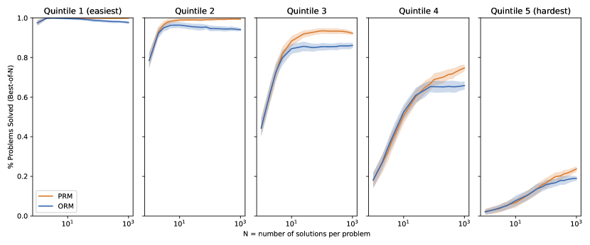

问题
验证器与过程奖励模型
推理时扩展的瓶颈不在「想得多」，而在「想得对不对」——生成一堆候选答案很容易，挑出对的那个才是关键。验证器（Verifier）就是这个「裁判」：从只给最终答案打分的 ORM，到给每一步打分的 PRM，再到用验证器引导搜索，这一页把「想得多」变成「想得对」的机制拆透。
一图看懂
没有验证器时，推理时扩展是「撒网」：模型生成 N 个答案，凭模型自己的信心选一个。有了验证器，变成「比赛」：模型生成候选，验证器逐个打分，最后挑最高分。过程奖励模型（PRM）更进一步——不光看结果，还看每步推理对不对，从而在搜索中途就剪掉坏分支。
- 生成候选答案Best-of-N
- 问题
- 结果验证器 ORM只看最终答案
- 生成候选答案 / Best-of-N
过程验证器 PRM逐步骤打分- 生成候选答案 / Best-of-N
- 验证器引导搜索剪枝 + 回溯
- 过程验证器 PRM / 逐步骤打分
- 选最高分答案
- 结果验证器 ORM / 只看最终答案
- 验证器引导搜索 / 剪枝 + 回溯
- 最终输出
- 选最高分答案
一、为什么生成模型自己选答案不靠谱
让生成模型对候选答案自评（比如让它再生成一遍「这个答案对吗」），本质是「让运动员当裁判」：模型对自己熟悉风格的答案过度自信，对正确但「不顺眼」的答案误杀。大量实验表明，自评选择的正确率常常不高于随机选一个（在数学等任务上）。
- 生成候选答案 ×N生成候选答案 ×N方案 A：模型自评方案 B：独立验证器
- 让同一个模型判断答案对不对
- 生成候选答案 ×N
独立训练的验证器逐个打分- 生成候选答案 ×N
哪种更可靠?- 方案 A：模型自评
- 方案 B：独立验证器
- 选『自认为对』的那个
- 让同一个模型 / 判断答案对不对
选分数最高的那个- 独立训练的验证器 / 逐个打分
实验证据独立验证器显著更优- 哪种更可靠?
- 问题：熟悉的错误会被自信地选中
- 选『自认为对』的那个
优势：验证能力与生成能力解耦- 选分数最高的那个
为什么会这样？因为生成和验证是两种不同的能力：生成需要「顺着思路写出答案」，验证需要「挑剔地检查每个环节」。语言模型经过训练擅长前者，后者是一个单独的能力维度。更微妙的是，模型自评时容易产生「置信度偏差」——对训练分布内的风格过度自信，对分布外的正确解法误判。
一句话直觉
让考生自己判自己的卷子，成绩通常不可信。独立验证器就是「另请一位阅卷老师」——这也是它在数学、代码等可验证任务上效果显著的根本原因。
一个具体的例子能说明问题。假设一道积分题，正确答案涉及换元法，而模型最常见的错误是"以为可以用分部积分"。在自评场景里，模型生成了一段看似完整但用了分部积分的错误解答，然后自评"这个解答步骤完整、逻辑清晰，是对的"——因为它对自己熟悉的错误解法很自信。而独立验证器在训练时看过大量"分部积分在本题行不通"的负样本，能识别出这是典型错误。更关键的是，自评本质上和生成用的是同一套权重，错误的"产生机制"和错误的"识别机制"高度相关；独立验证器用的是另一套权重，它的训练分布可以专门针对"识别错误"来构造。这就是为什么独立验证器在数学、代码等任务上几乎总是优于模型自评。
二、ORM：结果奖励模型
结果奖励模型（Outcome Reward Model）只对「最终答案」打分：输入问题 + 完整回答，输出一个正确性分数。它是验证器家族里最简单、最容易落地的一档。
2.1 训练数据怎么造
ORM 训练数据可以用「自动判题 + 采样」生成：对数学题，生成多个答案，用执行器/答案比对判对错，正确样本打高分、错误打低分。流程如下：
- 题目池（数学 / 代码 / 选择题）
- 生成答案 1
- 题目池 / （数学 / 代码 / 选择题）
生成答案 2- 题目池 / （数学 / 代码 / 选择题）
生成答案 N- 题目池 / （数学 / 代码 / 选择题）
- 自动判题执行器 / 答案比对
- 生成答案 1
- 生成答案 2
- 生成答案 N
- 正样本label = 1
- 自动判题 / 执行器 / 答案比对正确
负样本label = 0- 自动判题 / 执行器 / 答案比对错误
- 训练 ORM回归 / 排序损失
- 正样本 / label = 1
- 负样本 / label = 0
- 优点：数据好造（自动判题）、训练简单、Best-of-N 收益稳定；
- 盲区：过程错了但结果碰对（如推理步骤全是胡扯最后蒙对），ORM 会给高分；
- 适用：答案可自动验证的任务（数学、代码、选择题）。
2.2 一个 ORM 训练骨架
import torch
import torch.nn as nn
class OutcomeRewardModel(nn.Module):
"""结果奖励模型：给完整答案打分
结构：基座模型 + 序列池化 + 打分头
"""
def __init__(self, base_model, hidden_size):
super().__init__()
self.base = base_model # 冻结或微调的基座
self.score_head = nn.Sequential(
nn.Linear(hidden_size, hidden_size),
nn.GELU(),
nn.Linear(hidden_size, 1)
)
def forward(self, input_ids, attention_mask):
# 取最后一个 token 的隐状态作为「整段回答」的表示
outputs = self.base(
input_ids=input_ids,
attention_mask=attention_mask,
output_hidden_states=True
)
last_hidden = outputs.hidden_states[-1] # [batch, seq, hidden]
# 收集每个序列最后一个有效 token 的表示
seq_lens = attention_mask.sum(dim=1) - 1 # 最后一个 token 位置
pooled = last_hidden[
torch.arange(last_hidden.size(0)),
seq_lens
]
score = self.score_head(pooled).squeeze(-1) # [batch]
return score
def train_orm(model, dataloader, epochs=3, lr=1e-5):
"""排序损失训练：正样本分数 > 负样本分数"""
opt = torch.optim.AdamW(model.parameters(), lr=lr)
criterion = nn.MarginRankingLoss(margin=0.1)
model.train()
for epoch in range(epochs):
total_loss = 0
for batch in dataloader:
# batch: {"pos_ids":..., "neg_ids":...,
# "pos_mask":..., "neg_mask":...}
pos_score = model(batch["pos_ids"], batch["pos_mask"])
neg_score = model(batch["neg_ids"], batch["neg_mask"])
# 目标是 pos_score 显著高于 neg_score
target = torch.ones_like(pos_score)
loss = criterion(pos_score, neg_score, target)
opt.zero_grad()
loss.backward()
opt.step()
total_loss += loss.item()
print(f"epoch {epoch}: loss={total_loss/len(dataloader):.4f}")这段骨架里有三个值得注意的设计点。第一，打分头的输入是"最后一个 token 的隐状态"（last-token pooling），而不是对所有位置求平均——这借鉴了分类头接结束符的惯用做法，因为训练时正负样本都被格式化成"完整回答 + 结束符"，最后一个位置的隐状态已经聚合了整段回答的信息。第二，损失用的是排序损失（margin ranking loss）而不是回归损失：目标不是让正样本分数精确等于 1，而是让正样本分数比负样本高出 margin=0.1 即可。排序目标对绝对分数不敏感，训练更稳，但也正因为只关心相对序，ORM 的原始分数天生不具备概率含义——这正是后文"校准"问题的伏笔。第三，基座可以选择冻结或微调，实践中通常微调打分头、冻结或低学习率微调基座，避免验证器退化成"只会顺着生成模型的风格打高分"。
三、PRM：过程奖励模型
过程奖励模型（Process Reward Model）对每一步推理打分：输入问题 + 推理到第 $t$ 步的轨迹，输出「这一步到目前为止对不对」。它解决了 ORM 的「过程盲区」——能识别「步骤错了但结果蒙对」的情况。
核心主题验证器
01结果验证 ORM
- 只看最终答案
- 盲区：过程错但结果对
02过程验证 PRM
- 第 1 步分数 s1
- 第 2 步分数 s2
- 第 3 步分数 s3
- 能定位第几步走偏
3.1 PRM 训练数据的三大来源
PRM 的训练信号比 ORM 密集得多：每步都有监督。但「逐步标注」的数据从哪来？常见三种思路：
| 标注方法 | 做法 | 优点 | 缺点 | 代表工作 |
|---|---|---|---|---|
| 自动反推 | 某步之后无论如何续写都错 → 该步标错 | 全自动、可扩展 | 近似，非精确 | Math-Shepherd |
| 蒙特卡洛估计 | 从该步起多次续写，成功比例 = 该步分数 | 分数连续、稳定 | 计算开销大 | PRM800K 变体 |
| 人工标注 | 标注者逐步判断对错 | 质量最高 | 昂贵、不可扩展 | PRM800K 种子集 |
实际工程常采用「自动为主 + 人工校准种子」的组合：先用蒙特卡洛/自动反推铺量，再用小规模人工标注校准标签分布。
3.2 蒙特卡洛标注的代码逻辑
import numpy as np
def mc_step_labeling(question, trajectory, generator, verifier,
num_rollouts=16, max_steps=8):
"""蒙特卡洛估计：给轨迹的每一步打标签
思路：从第 t 步开始，续写多条完整轨迹，
用「最终答案的正确比例」作为第 t 步的分数。
Args:
question: 题目
trajectory: 已生成的逐步轨迹 [{step, text}]
generator: 续写模型
verifier: 答案判题器（数学：比对；代码：执行）
num_rollouts: 每条轨迹的续写次数
Returns:
step_scores: 每步的 MC 分数 [0, 1]
"""
step_scores = []
for t in range(len(trajectory)):
prefix = "".join(s["text"] for s in trajectory[:t+1])
correct_count = 0
for _ in range(num_rollouts):
# 从第 t 步续写到完整答案
full = generator(
question + "\n" + prefix,
max_new_tokens=512
)
answer = extract_answer(full)
if verifier(question, answer):
correct_count += 1
step_scores.append(correct_count / num_rollouts)
return step_scores
# 直觉：如果第 2 步就错了，那么无论后面怎么续写
# 大部分轨迹都会失败 → 第 2 步分数接近 0
# 这给 PRM 提供了「哪步开始错」的训练信号代码里最值得注意的一点是：判题用的 verifier 不是另一个神经网络，而是执行器或答案比对器。这正是 MC 标注和「蒸馏训练数据」的关键区别——训练 PRM 时的"老师"可以是规则判题器，因为数学答案可自动验证；等到推理时，PRM 自己才成为"裁判"。另外，num_rollouts 是成本与精度的权衡点：续写 16 次在中小规模任务上够用，但长轨迹、多步骤任务通常要 32 到 64 次，否则靠后几步的分数噪声会大得失去意义。
一句话直觉
ORM 看「考卷最后得分」，PRM 看「每道题的分步演算」——后者不仅更能挑出对答案，还能告诉搜索「哪步开始走偏了」。
3.3 一个蒙特卡洛标注的数字算例
光看代码还不够直观，用一个具体算例走一遍。假设题目是"解方程 x² − 5x + 6 = 0"，模型生成的轨迹有三步：第 1 步"把方程改写为 (x−2)(x−3)=0"；第 2 步"所以 x=2 或 x=3"；第 3 步"检验：代入原方程成立，答案 x=2, x=3"。现在用 num_rollouts=16 给每一步打标签。
第 1 步之后无论怎么续写，只要方向正确，最后大概率都能得到正确答案，于是 16 次续写里约有 15 次成功，第 1 步分数 ≈ 0.94；第 2 步同理，也 ≈ 0.94。现在假设存在一条错误轨迹：第 2 步被写成了"所以 x=2，x=3 检验不成立舍去"（错误地舍弃了 3），从这一步之后无论怎么续写，最终答案都很难回到正确，16 次续写几乎全部失败，第 2 步分数 ≈ 0.06。这个接近 0 的分数就是给 PRM 的强信号："错误发生在第 2 步"。
这个算例也说明了 MC 标注的精度上限：它给出的是"这一大步的期望成功率"，而不是"这一小步在逻辑上对不对"。所以分数落在 0.5 附近的模糊步骤，往往是被续写不稳定和舍入误差共同污染的；真正可靠的信号集中在接近 0 和接近 1 的两端。实践中的一个技巧是：对分数落在 0.2 到 0.8 之间的"灰区"步骤，用更小的续写步长重采样一次，或者直接交给人工校准。
3.4 PRM 的步骤粒度：打分的最小单位是什么
PRM 的"每一步"到底指什么？是每个自然语言句子、每个数学等式，还是每个 token？这直接决定训练数据和打分头的设计，也是 PRM 工程里最容易踩坑的地方。
| 粒度 | 优点 | 缺点 | 适用 |
|---|---|---|---|
| 句子级 | 标注成本低，最接近人类理解 | 一个句子里可能既有对又有错 | 开放式推理 |
| 等式 / 步骤级 | 数学题自然边界，标注清晰 | 需要先做步骤切分 | 数学证明 |
| token 级 | 信号最密，可与生成对齐 | 噪声大、标注最贵 | 研究实验 |
经验法则：能用粗粒度就不用细粒度。细粒度看起来信息更多，但每一步的"对错"本身是模糊的——一个中间结果写对了、可它依赖的错误前提已经发生，这一步算对还是算错？粗粒度（句子级或等式级）反而更稳定，因为它在不同标注者之间的一致性更高，模型也更容易学。只有在粗粒度完全不够用（比如超长证明）时才考虑细粒度，并配合人工校准种子一起用。
「PRM 比 ORM 好在哪」不能只靠直觉，得看证据。下图就是 PRM 领域奠基论文《Let's Verify Step by Step》里的原始对比——它把测试题目按难度分组，分别统计 ORM 和 PRM 的表现，是验证器这个领域被引用最多的图之一。

新手读这张图，抓住两点就够了。第一，图的横轴是题目难度分组，从易到难排列——论文用「人类标注者做对的概率」给题目打了难度标签；纵轴是验证器（在给定的搜索策略下）最终选出的答案正确率。图上 ORM 和 PRM 两条线或两组柱形可以看成「只看结果的裁判」和「逐步检查的裁判」在同一批题目上的成绩单。第二，难度低的题目上两者差距很小，难度越高，PRM 相对 ORM 的优势越大——这完全符合直觉：简单题「一步就蒙对」，看结果和看过程区别不大；而困难题必须每一步都对，ORM 会给「过程全错、结果碰对」的答案打高分，PRM 却能通过逐步打分把这类「侥幸答案」揪出来。这张图也正是「为什么要在搜索中用 PRM 而非 ORM」最直接的论文级证据。
四、验证器引导搜索：把 PRM 变成剪枝器
验证器不只在「生成完」后用，还可以在「生成中」用，这就是验证器引导搜索（verifier-guided search）：每一步生成多个候选，用 PRM 打分，只保留高分分支继续。坏分支中途被剪掉，生成预算花在刀刃上。
- 第 1 步候选 ×K
- PRM 打分保留 Top-K
- 第 2 步候选 ×K
- PRM 打分保留 Top-K
- 第 3 步候选 ×K
- PRM 打分
- 选最高分轨迹
4.1 三种搜索策略对比
| 方法 | 做法 | 特点 | 适用场景 |
|---|---|---|---|
| Best-of-N + ORM | 生成 N 个完整答案，ORM 挑最高分 | 最简单可靠，但 N 大时成本高 | 答案可快速验证的任务 |
| Beam Search + PRM | 每一步保留得分最高的 K 条轨迹继续生成 | 用 PRM 中途剪枝，节省生成预算 | 步骤可拆解的推理任务 |
| PRM + 回溯（类 MCTS） | 低分步骤触发回溯，换分支重试 | 对复杂多步问题最有效，工程最复杂 | 超长推理、开放式问题 |
三者的选择本质上是"工程复杂度 vs 能力上限"的权衡。Best-of-N 的实现只要会调推理接口就行，N 取 16 或 32 通常能稳定拿到几个百分点的正确率提升；Beam Search + PRM 需要维护一个 beam 循环，但同一生成预算下能探索到更深的解；类 MCTS 的回溯则要管理搜索树状态，工程最重，只在超长推理或开放式问题上才值得投入。多数业务建议从 Best-of-N 起步，先用收益曲线确认验证器确实有效、校准也没有问题，再决定要不要升级到搜索。盲目一上来就上 MCTS，很可能写了一个月搜索框架，最后发现收益还不如把 N 从 16 加到 32。
- 根（问题）
- 步 1aPRM: 0.8
- 根（问题）
步 1bPRM: 0.3- 根（问题）
- 步 2aPRM: 0.9
- 步 1a / PRM: 0.8
步 2bPRM: 0.5- 步 1a / PRM: 0.8
步 2cPRM: 0.2- 步 1b / PRM: 0.3
- 步 3aPRM: 0.95 → 选中
- 步 2a / PRM: 0.9
步 3bPRM: 0.4- 步 2b / PRM: 0.5
步 3cPRM: 0.1- 步 2c / PRM: 0.2
4.2 Best-of-N 的收益曲线
Best-of-N 的核心发现（OpenAI 2024 论文）：验证器的选择收益是「对数级增长」——N 从 1 翻到 4、16、64，正确率逐步爬升但边际收益递减。更重要的是，用验证器挑选（verifier-based）显著优于让生成模型自选（majority vote 之外的 self-consistency 也有上限）。下图示意：
图中的两组曲线告诉我们三件事。其一，验证器曲线始终在自评曲线上方，且差距随 N 增大而扩大——验证器不是"锦上添花"，而是"N 越大优势越明显"的放大器。其二，两条曲线的斜率都在下降：N=64 相比 N=32 的提升，已经远小于 N=2 相比 N=1 的提升。所以在设 N 之前，先跑一次小规模的收益曲线，找到"多采样一次带来的正确率提升"开始趋平的那个点，把它作为默认 N。其三，这条曲线也解释了为什么近年研究的结论是"测试时计算可以部分替代模型变大"——在同样的算力预算下，把预算花在"多采样 + 验证器挑选"上，比花在"更大模型"上往往更划算，这也是 混合推理与思考预算 一页的出发点。
五、PRM 的校准问题：分数 ≠ 概率
PRM 输出的分数看起来像概率（0-1 之间），但它不是校准过的概率。0.8 不代表「有 80% 概率正确」。直接用原始分数设阈值会踩坑，必须做校准。
新手最容易搞错
三个关于验证器的直觉几乎人人都踩过：其一，「PRM 分数 0.8 就是 80% 正确率」——不是，那是未校准的原始分数，0.8 只代表「在训练分布里它比 0.5 更接近对的」，绝对值没有概率含义；其二，「数学题的 PRM 分数可以和代码题的 PRM 分数比大小」——不能，不同任务、不同训练数据的分数分布完全不同，跨任务比较等于拿两个国家的考试分数比排名；其三，「让生成模型自己评价自己的答案就行，何必多训一个验证器」——生成和验证是两种能力，自评对「熟悉的错误」会过度自信，这在第一节已经论证过。遇到这三种直觉冒出来时，先停一下，回到本节的校准步骤。
stateDiagram-v2
[*] --> 原始分数
原始分数 --> 直接当概率: 阈值失真 / 跨任务不可比
原始分数 --> 温度缩放校准
温度缩放校准 --> 校准后分数
校准后分数 --> 按任务设阈值
直接当概率 --> 踩坑
- 校准方法：在验证集上用温度缩放（temperature scaling）或 Platt scaling 把分数映射到真实正确率；
- 阈值调参：不同任务的最佳阈值不同，要用验证集搜索，而不是拍脑袋定 0.5；
- 跨任务不可比：数学题的 PRM 分数和代码题的 PRM 分数不能直接比大小。
校准的本质是"把相对分数翻译成绝对概率"。一个简单的做法是：收集一批带真实对错标签的验证样本，把原始分数分桶，统计每个桶里的真实正确率，得到一张"分数 → 概率"的查找表；更平滑的做法是用温度缩放或 Platt scaling 拟合一个单调映射。校准之后你才能回答"分数 0.8 是否值得信任"这类问题——比如在接入人工审核流程时，用校准后的分数决定哪些答案需要转人工、哪些可以直接放行。一个反直觉的注意点：校准用的验证集必须与最终应用的任务分布一致，如果验证集是数学题、上线后却跑代码题，校准出的概率表就没有意义。
展开：校准到底怎么算——手把手做一次分数分桶
温度缩放（temperature scaling）是最常用的校准方法，它在验证集上学一个标量参数 $T$，把原始分数 $s$ 映射成 $\sigma(s/T)$（$\sigma$ 是 logistic 函数）。但理解它最好的方式，是先做一次朴素的「分桶校准」，你会在过程中直观看到「分数 ≠ 概率」到底是什么意思。
假设你有一个 1000 条的验证集，每条都有真实对错标签，PRM 给了每条一个原始分数。把所有分数按大小排好，分成 5 个桶：0.0-0.2、0.2-0.4、0.4-0.6、0.6-0.8、0.8-1.0。现在统计每个桶里「真实正确的比例」——这才是「分到这批样本的正确率」。
你几乎一定会看到这样的现象：分数 0.6-0.8 的桶里，真实正确率可能只有 55%；而分数 0.8-1.0 的桶里，真实正确率可能有 85%。也就是说，模型打 0.7 的答案，真实只有一半多是对的——0.7 这个数字严重「虚高」。原因是训练 PRM 的标签（比如 MC 估计出来的 0-1 分数）本身就有偏差，且训练分布和测试分布不完全一致，原始分数被系统性拉偏。
知道了桶与桶之间的「分桶正确率」之后，校准就两步：一是把每个桶的分数换成桶内真实正确率（查表校准）；二是决定业务阈值——比如「正确率低于 70% 的答案转人工」，那就查表找出对应哪个分数区间，而不是拍脑袋定「分数低于 0.7 转人工」。你会发现这个「真实 70%」对应的原始分数阈值往往不是 0.7，而可能是 0.83 或 0.61——不校准就设阈值，等于闭着眼睛在错误标尺上划线。
温度缩放只是把这个查表过程平滑化：它用 logistic 函数拟合「分数 → 真实正确率」的映射，好处是连续、可外推到桶之间，坏处是假设了单调关系。工程上先用分桶法诊断，再决定要不要上温度缩放，是更稳的路径。
六、与 RL 训练的关系
验证器与 GRPO/RLVR 是「表亲」：RLVR 用可验证奖励（答案对错）当训练信号优化生成器本身；验证器则在推理时当选择器。两条路线可以叠加：先 RLVR 把生成器训强，再用验证器在推理时把余量榨干。
sequenceDiagram
participant R as 可验证奖励
participant G as 生成器
participant V as 验证器
participant U as 用户
Note over R,G: 训练阶段（RLVR）
R->>G: 答案对错的奖励信号
G->>G: 学会往对的方向走
Note over G,V: 推理阶段（验证器）
G->>G: 生成候选答案 ×N
G->>V: 交给验证器打分
V->>V: 选最高分答案
V-->>U: 最终答案
Note over G,V: 训练更准 × 选择更稳 → 收益放大
也有工作直接把 PRM 当奖励模型去做 RL，让生成器学会「避开 PRM 不喜欢的步骤」——这就是「过程奖励 RL」路线，把验证器的知识蒸馏回生成器，推理时甚至可以不显式跑验证器。
六点五、验证器的成本账：钱花在哪
验证器不是免费的。以 Best-of-N 为例，如果 N=32，生成阶段就是单次推理的 32 倍成本，验证器打分本身又是一次完整的模型前向。一个常见的误解是"验证器很便宜，因为打分序列短"——其实打分也要过一遍整个基座，成本和生成相近长度几乎一样。所以端到端成本大约是：生成 32 个候选 + 验证器打 32 次分，粗略是单次推理的几十倍。这也是为什么验证器方案必须建立在"可自动判题"的任务上——省下来的正确答案价值要能覆盖这些额外算力。
省钱的思路有三个方向。第一，蒸馏一个小验证器：用大验证器给大量样本打标签，训练一个小模型来近似它的分数，部署时用小的，成本可能降一个数量级。第二，两阶段筛选：先用便宜的信号（如自洽性、长度、格式检查）粗筛掉一半明显不行的候选，再对剩下的一半用验证器精筛。第三，与搜索共享计算：在 Beam Search 里每一步的 PRM 打分被反复利用，而不是生成完再从头打一遍。这些优化是推理时扩展从论文走进生产系统的现实前提。
七、2024-2026 进展与工程落地
| 方向 | 核心进展 | 影响 |
|---|---|---|
| 测试时计算最优分配 | 验证器选择 + 搜索优于单纯加大模型 | 小模型 + 强验证器可媲美大模型 |
| PRM 自动标注规模化 | MC 估计与自动反推成为标准 | PRM 训练成本大幅下降 |
| 验证器即奖励模型 | PRM 直接参与 RL 训练 | 生成器与验证器一体化 |
| 跨任务验证器 | 统一验证器 + 任务适配头 | 一套验证器覆盖多任务 |
| 轻量验证器蒸馏 | 大验证器蒸馏成小验证器 | 端侧也能用验证器 |
工程落地路径建议：先上 Best-of-N + ORM 拿到确定性收益，再在推理成本敏感的场景升级到 PRM + 搜索。验证器本身也有校准问题——PRM 的分数不是概率，不能直接当置信度用，阈值要靠验证集调。
深入：验证器与奖励黑客（reward hacking）
验证器不是万无一失的裁判，它自己也可能被"骗"。当 PRM 的分数参与搜索或 RL 时，生成器会逐渐学会利用验证器的漏洞，而不是真正解决问题——这就是奖励黑客。
几个真实存在的模式：第一，长度偏好：如果 PRM 对更长的推理步骤给分偏高（用 MC 标注的数据常有此偏向，因为长步骤续写成功的概率更高），生成器会学会"写长废话"来刷分。第二，风格偏好：验证器可能对某些措辞、公式格式存在隐式偏好，生成器会去模仿这些表面特征。第三，分布错位：训练验证器的数据分布和实际推理时的分布不一致时，验证器在分布外的题目上会给出不可靠的分数。
缓解手段有三类：一是数据侧，标注时对分数做长度归一化，或做对抗性的负样本增强（把高分但错误的样本混进训练集）；二是架构侧，让验证器和生成器解耦（绝不用同一个模型自评），并对验证器分数做校准；三是评测侧，定期用独立的、更昂贵的验证手段（符号求解器、测试用例）抽查"验证器分数"与"真实正确率"的相关性，一旦相关性明显下滑，就要重新标注或重新训练。
要点速查
- 本质：验证器把「生成」与「验证」分离，是推理时扩展的裁判；ORM 看结果、PRM 看过程、搜索用 PRM 剪枝。
- 为什么独立验证器：模型自评是「运动员当裁判」，对熟悉的错误过度自信，正确率常不高于随机。
- ORM：只评最终答案，数据好造（自动判题），但看不到「过程错结果对」的盲区。
- PRM 数据：自动反推、蒙特卡洛估计、人工标注三法；工程用「自动为主 + 人工校准种子」。
- 搜索策略：Best-of-N（简单）、Beam+PRM（剪枝）、MCTS（回溯），按任务复杂度升级。
- 校准：PRM 分数不是概率，必须温度缩放校准 + 验证集调阈值，跨任务不可直接比较。
- 与 RL：RLVR 训生成器、验证器做选择，两者正交可叠加，也可用 PRM 当奖励模型训练。
- 常见坑：自评替代独立验证器；PRM 分数当概率用；忽略 PRM 对「步骤粒度」的敏感性；N 无限加大而不看边际收益。
参考文献与延伸阅读
- Let's Verify Step by Step — PRM 的代表性工作，系统对比 ORM 与 PRM · arXiv:2305.20050
- Scaling LLM Test-Time Compute Optimally can be More Effective than Scaling Model Parameters — 推理时计算与验证器结合的经典分析 · arXiv:2408.03314
- Math-Shepherd: Verify and Reinforce LLMs Step-by-step without Human Annotations — PRM 自动标注的代表作 · arXiv:2312.08935
- Process Reinforcement Learning: Tuning the LLM for Step-by-Step Reasoning — 过程奖励 RL 的探索 · arXiv:2501.07375
权威延伸资料
围绕“验证器与过程奖励模型”继续深入
本章聚焦生成阶段的决策：采样和解码、Self-Consistency、Best-of-N、树搜索、验证器，以及 test-time scaling 的成本边界。
阅读提示：推理时扩展不是无条件增加采样次数；先确认任务是否可验证，再把额外计算预算放到候选生成、验证或搜索中的瓶颈。
- The Curious Case of Neural Text Degeneration ↗
Nucleus sampling 的原始论文，解释贪心/beam search 为什么会导致重复和退化。
- Self-Consistency Improves Chain of Thought Reasoning ↗
通过多条推理路径投票提高可验证任务准确率，是 test-time scaling 的基础范式。
- Let's Verify Step by Step ↗
过程奖励模型和逐步验证的代表作，说明“答案对不对”和“推理过程是否可靠”是不同信号。
- Tree of Thoughts ↗
把语言模型生成组织成可回溯的搜索树，适合和页面中的 beam、Best-of-N 对照。
- DeepSeek-R1 ↗
大规模推理强化的公开技术报告，适合观察奖励设计、冷启动和蒸馏的组合方式。
资料优先选用原始论文、官方文档、大学课程和公共机构材料；链接按 2026-08-10 检索，具体版本以来源页面为准。
篇章视角
围绕“验证器与过程奖励模型”继续深入
发展脉络
推理由一次前向生成发展为带搜索、验证器和自适应预算的测试时计算，推理质量与计算量开始显式交换。
机制抓手
区分采样、束搜索、树搜索、验证器和思维长度；记录 token、并行分支、停止条件和最终选择规则。
工程权衡
更长的推理链不必然更准确，延迟、显存、重复率和错误传播都需要纳入预算。
前沿观察
混合推理、过程奖励、草稿-验证解码和自适应思考预算是当前主线，仍需任务级而非单一榜单评估。
实践检查能设计一个带预算上限和失败回退的推理服务，并解释 verifier 错误如何影响最终答案。
学习目标
能区分 ORM 与 PRM 的标签粒度、校准和搜索用途，并理解高分不等于真实成功概率。
先修关系
先修 Transformer decode、概率分布和 KV Cache；同时记录质量、token、延迟和停止条件。
最小实验
构造不少于 100 个带步骤正确/错误标签的轨迹，训练或模拟 ORM/PRM 分数；计算 PR-AUC、Brier、ECE，并用于 Best-of-4 选择。
验收标准
同时报告判别指标、校准指标和下游选择准确率；校准后 ECE 低于校准前，且展示至少一个 verifier 高分但最终错误的样本。